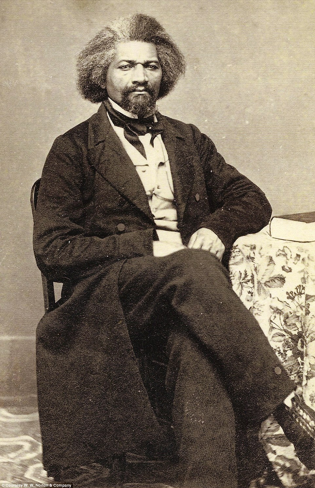

- Frederick Douglass had 160 pictures taken of him which ment that he had more pictures than Abraham Lincoln.
- He had five kids.
- He only had one brother in his family.
- The first autobiography he made was about him and his life when he was a slave.
- He was an orator, social reformer, abolinitionist, a writer, and a statesman.
- He chose his name from a character in Sir Walter Scott's The Lady of the Lake.
- Douglass founded "The North Star," which is an abolonitionist newspaper.
- After Lincolns death, Mrs.Licolns sent Douglass her husbands walking stick
- Douglass was elected as vice president of the Equal Rights Party in 1872
- Douglass nevered smiled in anyone of his pictures because he wanted to counter act the images of smiling happy slaves.